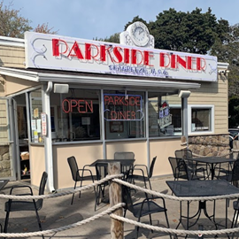
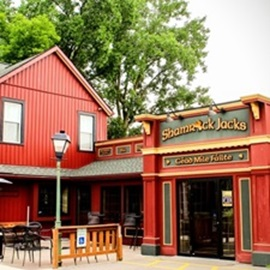
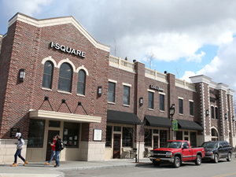

Food Around Irondequoit
Parkside Diner
There's something timeless about Parkside Diner, a place where the scent of sizzling bacon and fresh coffee lingers in the air like a warm memory. The booths are worn in the way only well-loved spots can be, the kind where regulars slide in without a second thought, already knowing what they'll order. The griddle never seems to rest, flipping pancakes to golden perfection, crisping up home fries that crackle under the weight of a fork. It's a place that doesn't try to be anything more than what it is—comfort, served on a plate, with a side of nostalgia.
Shamrock Jack's
A flickering neon shamrock casts a soft green glow outside, an unspoken promise of good food and even better company. Inside, Shamrock Jack's hums with the kind of warmth that only a neighborhood pub can conjure—half laughter, half the clink of pint glasses meeting in midair. The menu is a greatest hits album of comfort food, with fish and chips so crisp they almost shatter, and shepherd's pie rich enough to chase away even the worst of Rochester winters. It's the sort of place where time slows down, where stories stretch a little longer, and where the Guinness flows just right.
I-Square
I-Square doesn't settle for being just one thing. It's a little bit of everything all at once—an open, bustling hub where people gather, where live music drifts through the air, where food is as much about the experience as the taste. You could grab a burger, wood-fired and piled high, or a pizza with just the right amount of char, then wander upstairs to watch the town from the rooftop. No two visits are ever quite the same, but that's the magic of it. It's not just a meal; it's a place where Irondequoit comes together.